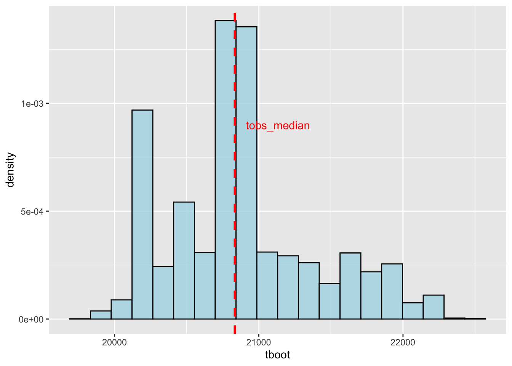
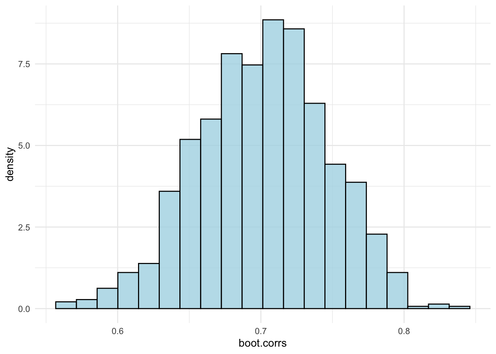

library(MASS)
library(ggplot2)
library(knitr)
# Generate a uniform using sample
unif_1 <- sample(0:99, size = 50, replace = TRUE)
# Sample from this without replacement
unif_2 <- sample(unif_1, size = 10, replace = FALSE)
# Sample with replacement multiple times
unif_3 <- replicate(10, sample(unif_1, size = 50, replace = TRUE))Bootstrapping Practical
Question 1: Median speed of galaxies
gal <- galaxies
ggplot() +
geom_histogram(aes(x = gal, y = after_stat(density)),
bins = 20,
alpha = 0.8,
fill = "lightblue",
colour = "black")tobs_median <- median(gal)- Set the number of bootstrap samples to
B = 10000.
B <- 10000- Take B Bootstrap samples, each time calculating the median speed, store in
tboot.
tboot <- replicate(B, median(sample(gal, length(gal), replace = TRUE)))- What is
mean(tboot) - tobs_median?
mean(tboot) - tobs_median[1] 41.7576- What is
sd(tboot)? Will this decrease if B is increased? Explain. What exactly will this value tell us?
se <- sd(tboot)
se[1] 513.6926This represents the standard deviation of the bootstrap estimate of the median speed. A measure of variability in estimated median across the B bootstrap samples. It is unlikely to reduce as B increases as it is about the variability in the statistic as opposed to how many samples you take. By increasing B, we may obtain a more precise statistic, however this doesn’t mean the variability will be decreased.
- Plot the bootstrap distribution (histogram), indicate
tobs_medianon this.
ggplot() +
geom_histogram(aes(x = tboot, y = after_stat(density)),
bins = 20,
colour = "black",
fill = "lightblue",
alpha = 0.8) +
geom_vline(xintercept = tobs_median, colour = "red", size = 1, linetype = "dashed") +
geom_text(aes(x = median(tboot), y = 9e-4, label = "tobs_median"), colour = "red", nudge_x = 300)Warning: Using `size` aesthetic for lines was deprecated in ggplot2 3.4.0.
ℹ Please use `linewidth` instead.
- Calculate a percentile and a basic bootstrap confidence interval for median galaxy speed. Compare.
# For the 95% confidence interval, we use the 2.5th and 97.5th percentiles
med_percentile_ci <- quantile(tboot, c(0.025, 0.975))
# Calculate the 95% bootstrap confidence interval (percentiles)
med_bootstrap_ci <- 2*c(tobs_median, tobs_median) - quantile(tboot, c(0.975, 0.025))
kable(data.frame(col1 = c(med_percentile_ci[1], med_bootstrap_ci[1]),
col2 = c(med_percentile_ci[2], med_bootstrap_ci[2]),
row.names = c("Percentile", "Bootstrap")),
col.names = c("2.5%", "97.5%"), digits = 4)| 2.5% | 97.5% | |
|---|---|---|
| Percentile | 20170.5 | 22053.0 |
| Bootstrap | 19614.0 | 21496.5 |
The basic bootstrap confidence interval is much smaller than the percentile confidence interval.
- Calculate percentile, basic bootstrap and bootstrap T confidence intervals for mean galaxy speed. Compare.
boot.funct <- function()
{
boot.sample <- sample(gal, replace = TRUE)
return(c(mean(boot.sample), sd(boot.sample)))
}
boot.stats <- replicate(B, boot.funct())
tboot_mean <- boot.stats[1,] # Means for samples
tboot_sds <- boot.stats[2,] # SDs for samples
tobs_mean <- mean(gal) # Mean of original
tsd <- sd(gal) # SD of original
n <- length(gal)
boot.ts <- (tboot_mean - tobs_mean)/(tboot_sds / sqrt(n)) # T stats for samples
# Calculate the 95% bootstrap confidence interval (percentiles)
percentile_ci <- quantile(tboot_mean, c(0.025, 0.975))
# Calculate the 95% bootstrap confidence interval (percentiles)
bootstrap_ci <- 2*c(tobs_mean, tobs_mean) - quantile(tboot_mean, c(0.975, 0.025))
# Calculate the 95% T confidence interval (percentiles)
t_ci <- c(tobs_mean, tobs_mean) - (tsd/sqrt(n)) * quantile(boot.ts, c(0.975, 0.025))
kable(data.frame(col1 = c(percentile_ci[1], bootstrap_ci[1], t_ci[1]),
col2 = c(percentile_ci[2], bootstrap_ci[2], t_ci[2]),
row.names = c("Percentile CI", "Bootstrap CI", "T CI")),
col.names = c("2.5%", "97.5%"), digits = 4)| 2.5% | 97.5% | |
|---|---|---|
| Percentile CI | 19832.50 | 21804.78 |
| Bootstrap CI | 19851.56 | 21823.84 |
| T CI | 19769.98 | 21795.47 |
All three of these confidence intervals are relatively similar. This is since the bootstrap distribution is relatively symmetric and means are unbiased.
Question 2: Galaxies Again
- Compare with your values for bias, standard error, percentile and basic bootstrap CI
library(boot)
bt.smpls <- boot(gal, function(x, i) median(x[i]), R = 3000)
# see Venables and Ripley, pg.134
# take 3000 bootstrap samples, returns the 3000 medians of these
bt.smpls
ORDINARY NONPARAMETRIC BOOTSTRAP
Call:
boot(data = gal, statistic = function(x, i) median(x[i]), R = 3000)
Bootstrap Statistics :
original bias std. error
t1* 20833.5 38.01783 510.8616boot.ci(bt.smpls, type = c("norm", "basic", "perc", "bca")) # all sorts of confidence intervalsBOOTSTRAP CONFIDENCE INTERVAL CALCULATIONS
Based on 3000 bootstrap replicates
CALL :
boot.ci(boot.out = bt.smpls, type = c("norm", "basic", "perc",
"bca"))
Intervals :
Level Normal Basic
95% (19794, 21797 ) (19614, 21492 )
Level Percentile BCa
95% (20175, 22053 ) (20172, 21960 )
Calculations and Intervals on Original Scalehelp(boot.ci) # bca gives a bias corrected and accelerated
# (improved) percentile interval
cat("Normal CI:", c(tobs_median - 1.96 * se, tobs_median + 1.96 * se), "\n")Normal CI: 19826.66 21840.34 cat("Pecentile interval:", med_percentile_ci, "\n")Pecentile interval: 20170.5 22053 cat("Pecentile interval:", med_bootstrap_ci, "\n")Pecentile interval: 19614 21496.5 Question 3: Regression Problem
For this question use the airquality data (airquality R data set).
For the correlation between ozone and temperature, find an estimate of SE, bias and construct a confidence interval. Use a nonparametric bootstrap.
df <- as.data.frame(airquality[, c("Temp", "Ozone")]) # Only necessary cols
df <- na.omit(df) # Removes NA's
n <- nrow(df) # Number of obs in dataset
correlations <- function(n, df)
{
cases <- sample(1:n, replace = TRUE)
booti <- df[cases, ]
return(cor(booti[1], booti[2]))
}
B <- 1000
corr.sample <- cor(df$Temp, df$Ozone)
boot.corrs <- replicate(B, correlations(n, df))
ggplot() +
geom_histogram(aes(x = boot.corrs, y = after_stat(density)),
colour = "black",
fill = "lightblue",
alpha = 0.8,
bins = 20,
) +
theme_minimal()
# Percentile Interval
percentile_ci <- quantile(boot.corrs, c(0.025, 0.975))
# Basic Bootstrap Interval
bootstrap_ci <- 2*c(corr.sample, corr.sample) -
quantile(boot.corrs, c(0.975, 0.025))
# Bias
bias.boot <- mean(boot.corrs) - corr.sample
## Standard Error
se.boot <- sd(boot.corrs)
kable(data.frame(col1 = c(percentile_ci[1], bootstrap_ci[1]),
col2 = c(percentile_ci[2], bootstrap_ci[2]),
row.names = c("Percentile CI", "Bootstrap CI")),
col.names = c("2.5%", "97.5%"), digits = 4,
caption = "Non-Parametric Bootstrapping Confidence Intervals")| 2.5% | 97.5% | |
|---|---|---|
| Percentile CI | 0.6082 | 0.7878 |
| Bootstrap CI | 0.6089 | 0.7885 |
Extra: Use semi-parametric bootstrapping to construct a confidence interval for the correlation.
# Get sample correlation
corr.sample <- cor(df$Temp, df$Ozone)
n <- length(df$Temp)
# Fit linear regression model
model <- lm(Ozone ~ Temp, data = df)
# Get the residuals from the fitted model
residuals <- model$residuals
# Get the predicted values (fitted values) from the model
fitted_values <- model$fitted.values
par_boot_correlations <- function(n, df, residuals, fitted_values)
{
bootstrap_residuals <- sample(residuals, size = n, replace = TRUE)
bootstrap_ozone <- fitted_values + bootstrap_residuals
return(cor(df$Temp, bootstrap_ozone))
}
B <- 1000
corr.sample <- cor(df$Temp, df$Ozone)
boot.corrs <- replicate(B, par_boot_correlations(n, df,
residuals, fitted_values))
# Percentile Interval
percentile_ci <- quantile(boot.corrs, c(0.025, 0.975))
# Basic Bootstrap Interval
bootstrap_ci <- 2*c(corr.sample, corr.sample) -
quantile(boot.corrs, c(0.975, 0.025))
kable(data.frame(col1 = c(percentile_ci[1], bootstrap_ci[1]),
col2 = c(percentile_ci[2], bootstrap_ci[2]),
row.names = c("Percentile CI", "Bootstrap CI")),
col.names = c("2.5%", "97.5%"), digits = 4,
caption = "Semi-Parametric Bootstrapping Confidence Intervals")| 2.5% | 97.5% | |
|---|---|---|
| Percentile CI | 0.5823 | 0.8037 |
| Bootstrap CI | 0.5930 | 0.8145 |
Extra: Use parametric bootstrapping to construct a confidence interval for the correlation.
# Get sample correlation
corr.sample <- cor(df$Temp, df$Ozone)
n <- length(df$Temp)
# Fit linear regression model
model <- lm(Ozone ~ Temp, data = df)
# Get the residuals from the fitted model
residuals <- model$residuals
# Get the predicted values (fitted values) from the model
fitted_values <- model$fitted.values
# Variance of the residuals
var <- var(residuals)
par_boot_correlations <- function(n, df, var, fitted_values)
{
sample_norm <- rnorm(n, mean = 0, sd = sqrt(var))
bootstrap_residuals <- sample(sample_norm, size = n, replace = TRUE)
bootstrap_ozone <- fitted_values + bootstrap_residuals
return(cor(df$Temp, bootstrap_ozone))
}
B <- 1000
corr.sample <- cor(df$Temp, df$Ozone)
boot.corrs <- replicate(B, par_boot_correlations(n, df,
var, fitted_values))
# Percentile Interval
percentile_ci <- quantile(boot.corrs, c(0.025, 0.975))
# Basic Bootstrap Interval
bootstrap_ci <- 2*c(corr.sample, corr.sample) -
quantile(boot.corrs, c(0.975, 0.025))
kable(data.frame(col1 = c(percentile_ci[1], bootstrap_ci[1]),
col2 = c(percentile_ci[2], bootstrap_ci[2]),
row.names = c("Percentile CI", "Bootstrap CI")),
col.names = c("2.5%", "97.5%"), digits = 4,
caption = "Parametric Bootstrapping Confidence Intervals")| 2.5% | 97.5% | |
|---|---|---|
| Percentile CI | 0.5978 | 0.7889 |
| Bootstrap CI | 0.6079 | 0.7989 |
Question 4: Relative Risk
Table 1 gives rates of cardiovascular disease for subjects with high or low blood pressure. The high-blood pressure group was 2.12 times as likely to develop the disease.
High <- "55/3338 = 0.0165"
Low <- "21/2676 = 0.0078"
RR <- "2.12"
tab <- data.frame(rbind(High, Low, RR))
row.names(tab) <- c("high", "low", "relative risk")
kable(tab, col.names = c("blood pressure", "cardiovascular disease"))| blood pressure | cardiovascular disease |
|---|---|
| high | 55/3338 = 0.0165 |
| low | 21/2676 = 0.0078 |
| relative risk | 2.12 |
Find the following (your answers should correspond, approximately, to the values in brackets):
bias (0.11)
bootstrap SE (0.62)
percentile bootstrap interval: (1.3, 3.7)
basic bootstrap interval
Hint: Observations are binary. There are two groups.
Additionally:
Is there an increased risk of cardiovascular disease with high blood pressure?
Is the estimate of relative risk biased?
Which of the two confidence intervals is better?